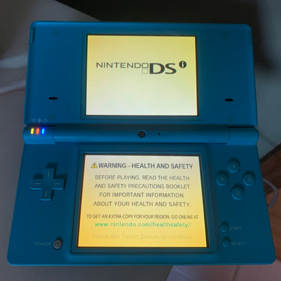

Visual DSi Fault Guide

Description
The screen has a yellow tint to it.
May be caused by UV exposure, plastic degrading, poor temperature, or any number of other issues.
Solution
Currently the only "fix" is to entirely replace the screens. You can follow the
DSi
and
DSi XL
guides on ifixit.